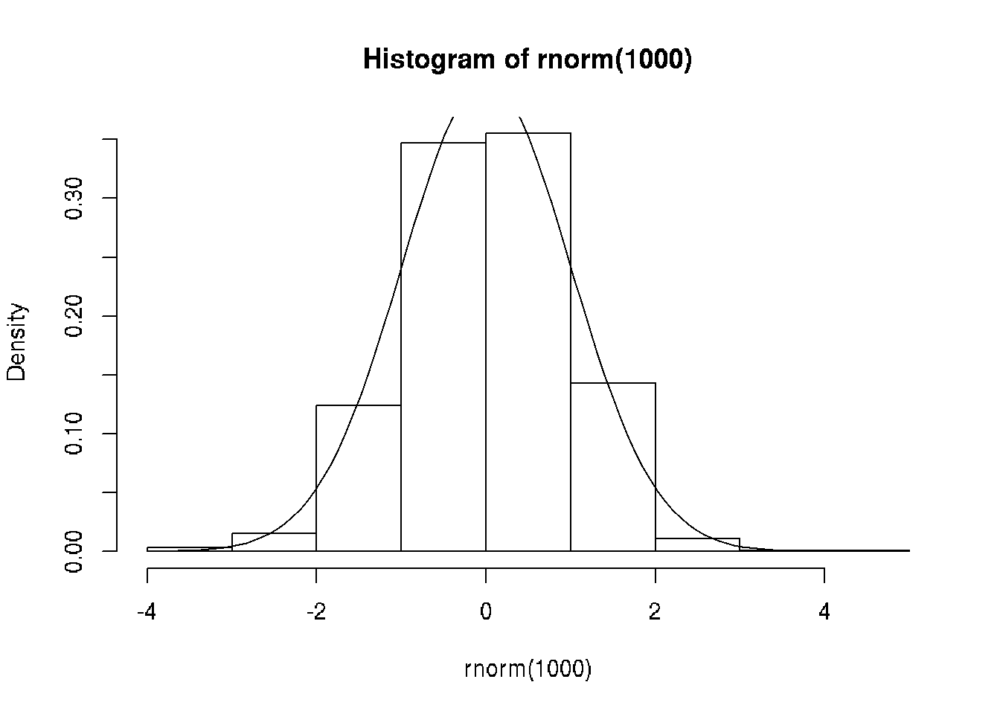

6 An R Markdown Demo
Author: Charles J. Geyer
6.1 License
This work is licensed under a Creative Commons Attribution-ShareAlike 4.0 International License (http://creativecommons.org/licenses/by-sa/4.0/).
6.2 R
The version of R used to make this document is 3.4.0.
The version of the
rmarkdownpackage used to make this document is 1.6.The version of the
knitrpackage used to make this document is 1.16.
6.3 Rendering
This is a demo for using the R package rmarkdown. To turn this file into HTML, use the R commands
library("rmarkdown")
render("rmark.Rmd")The same rendering can be accomplished in RStudio by loading the document into Rstudio and clicking the “Knit” button (this also does not seem to need the rmarkdown package).
If instead you wish to make a PDF document or some other output format (many are possible), use the optional argument output_format to the render function.
library("rmarkdown")
render("rmark.Rmd", output_format="pdf_document")Many other output formats are explained in the Rmarkdown documentation.
6.4 Markdown
Markdown (Wikipedia page) is “markup language” like HTML and LaTeX but much simpler. Variants of the original markdown language are used by GitHub (https://github.com) for formatting README files and other documentation, by reddit (https://www.reddit.com/) for formatting posts and comments, and by R Markdown (http://rmarkdown.rstudio.com/) for making documents that contain R computations and graphics.
Markdown is fast becoming an internet standard for “easy” markup.

xkcd:927 Standards
Markdown is way too simple to replace HTML or LaTeX, but it gets the job done, even if the result isn’t as pretty as one might like.
6.5 R Markdown
6.5.1 Look
If you really need your documents to look exactly the way you want them to look, then you will have to learn LaTeX and knitr. But if you are willing to accept the look that R Markdown gives you, then it is satisfactory for most purposes.
6.5.2 What Does It Do?
R Markdown allows you to include R computations and graphics in documents reproducibly. That means that anyone anywhere who gets your R markdown file can satisfy themselves that R did you you say it did.
This is very different from the old fashioned way of putting results in documents, where one just cut-and-pastes (snarf-and-barfs) the results into the document. Then there is zero evidence that these numbers or figures were produced the way you claim.
For concreteness, here is a simple example.
2 * pi## [1] 6.283185The result here was not cut-and-pasted into the document. Instead the R expression 2 * pi was executed in R and the result was put in the document by R Markdown, automatically.
This happens every time the document is generated so the result always matches the R code that generated it. There is no way they can fail to match (which can happen and often does happen with snarf-and-barf).
Here is another concrete example.
# set.seed(42) # uncomment to always get the same plot
hist(rnorm(1000), probability = TRUE)
curve(dnorm, add = TRUE) Every time the document is generated, this figure is different because the random sample produced by rnorm(1000) is different. (If I wanted it to be the same, I could uncomment the set.seed(42) statement.)
Again, there is no way the figure can fail to match the R code that generates it. The source code for the document (the Rmd file) is proof that everything is as the document claims. Anyone can verify the results by generating the document again.
6.5.3 Why Do We Want It?
6.5.3.1 The “Replication Crisis”
Many are now saying there is a “replication crisis” in science (Wikipedia page).
There are many issues affecting this “crisis.”
There are scientific issues, such has what experiments are done and how they are interpreted.
There are statistical issues, such as too small sample sizes and publication bias.
And there are computational issues: what data analysis was done and was it correct?
R Markdown only directly helps with the computational issues. It also helps to document your statistical analyses (Duh! Do you think generating a document that includes a statistical analysis may help to document it?)
Indirectly, R Markdown also helps with the other issues. Having the whole analysis from raw data to scientific findings publicly available — as many scientific journals now require — tends to make you a lot more careful in doing the analysis.
6.5.3.2 Business and Consulting
Outside of science there is no buzz about “replication crisis,” at least not yet. The hype about “big data” is so strong that hardly **anyone is questioning whether results are correct or actually support conclusions people draw from them.
But even if the results are never made public, R Markdown can still help a lot. Imagine you have spent weeks doing a very complicated analysis. The day before it is finished, a co-worker tells you there is a mistake in the data that has to be fixed. If you are generating your report the old-fashioned way, it will take almost as much time to redo the report as to do it in the first place. If you have done the report with R Markdown, correct the data, rerun R Markdown, and you’re done.
R Markdown takes some time to learn. And it always takes more time to do a data analysis while simultaneously documenting it than to do it while skipping the documentation. But it takes a lot less time than doing the analysis without documentation and adding documentation later. Also
R Markdown documentation is far more likely to be correct, and
the analysis itself is far more likely to be correct.
6.5.3.3 Newbie Data Analysis
The way most newbies use R or any other statistical package is to dive right in
typing commands into R,
typing commands into a file and cut-and-pasting them into R, or
using RStudio.
None of these actually document what was done because commands get edited a lot.
If you are in the habit of saving your workspace when you leave R or RStudio, can you explain exactly how every R object in there was created? Starting from raw data? Probably not.
6.5.3.4 Expert Data Analysis
The way experts use R is
- type commands into a file, say
foo.R. Use
R CMD BATCH --vanilla foo.Rto run R to do the analysis.
- type commands with explanations into an R Markdown file, and render it in a clean R environment (empty global environment). Either start R with a clean global environment (with
R --vanilla) and do
library("rmarkdown")
render("foo.Rmd")or start RStudio with a clean global environment (on the “Tools” menu, select “Global Options” and uncheck “Restore .RData into workspace at startup”, then close and restart) load the R Markdown file and click “Knit”.
The important thing is using a clean R environment so all calculations are fully reproducible. Same results every time the analysis is rerun by you or by anybody, anywhere, on any computer that has R.
6.6 Examples Not Involving R
One of the purposes of this document is to serve as an example of how to use R Markdown.
We have already exemplified a lot, but there’s more.
6.6.2 Headers
Headers are indicated by hash marks (one for each level), as with all the headers in this document. There is also an alternative format that you can use if you want.
6.6.3 Paragraphs
Paragraph breaks are indicated by blank lines.
6.6.4 Fonts
Font changes are indicated by stars for italic, double stars for boldface, and backticks for typewriter font (for code) as here.
6.6.5 Lists
Bulleted lists examples are shown above. Here is a numbered list
item one,
item two, and
item three.
Note that one does not have to do the numbers oneself. R Markdown figures them out (so when you insert a new item in the list it gets the numbers right without you doing anything to make that happen).
The reference material for lists shows how to make sublists and more.
6.6.6 HTML Links
Links have also already been exemplified.
If you want the link text to be the same as the link URL, you can just put the URL in plain text. R Markdown will make it a link. It can also go in angle brackets.
If you want the link text to be different from the link URL, you can just put the link text in square brackets followed by the URL in round brackets (with no space in between the two). For example, [CRAN](https://cran.r-project.org) makes the link CRAN.
For more about links, here is the documentation.
6.6.7 Tables
There is Markdown syntax for tables, but we won’t illustrate it here (documentation).
We will be more interested in tables created by R.
6.7 Examples Involving R
6.7.1 Code Chunks
Code chunks begin with ```{r} and end with ```. (documentation). The delimiters have to begin in column one (I think).
Here is an example.
2 + 2## [1] 4This is a “code chunk” processed by rmarkdown. When rmarkdown hits such a thing, it processes it, runs R to get the results, and stuffs the results (by default) in the output file it is creating. The text between code chunks is Markdown.
6.7.2 Code Chunks With Options
Lots of things can be made to happen by including options in the code chunk beginning delimiter. AFAIK all knitr chunk options can be used.
Here are some simple ones.
The option eval=FALSE says to show the chunk but do not evaluate it, as here
2 + 2The option echo=FALSE says to to not show the chunk but do evaluate it (just the opposite of eval=FALSE), as here (nothing appears in the output document because of echo=FALSE but the code chunk is executed).
If you look at the document source you will see a hidden code chunk that assigns a value to the variable hide which we can see in a code chunk with no options
hide## [1] 3This example also shows that all code chunks are executed in the same R session, so R objects assigned names in earlier chunks can be used in later chunks.
Many more examples of options for code chunks are exemplified below.
6.7.3 Plots
We showed a simple plot above, here is a more complicated one.
6.7.3.1 Make Up Data
Simulate regression data, and do the regression.
n <- 50
x <- seq(1, n)
a.true <- 3
b.true <- 1.5
y.true <- a.true + b.true * x
s.true <- 17.3
y <- y.true + s.true * rnorm(n)
out1 <- lm(y ~ x)
summary(out1)##
## Call:
## lm(formula = y ~ x)
##
## Residuals:
## Min 1Q Median 3Q Max
## -40.061 -15.485 2.221 12.069 33.250
##
## Coefficients:
## Estimate Std. Error t value Pr(>|t|)
## (Intercept) 2.6972 5.1746 0.521 0.605
## x 1.3758 0.1766 7.790 4.58e-10 ***
## ---
## Signif. codes: 0 '***' 0.001 '**' 0.01 '*' 0.05 '.' 0.1 ' ' 1
##
## Residual standard error: 18.02 on 48 degrees of freedom
## Multiple R-squared: 0.5584, Adjusted R-squared: 0.5492
## F-statistic: 60.69 on 1 and 48 DF, p-value: 4.576e-106.7.3.2 Figure with Code to Make It Shown
The following figure is produced by the following code
plot(x, y)
abline(out1)Figure 6.1: Simple Linear Regression
Here we use the chunk options fig.align='center', fig.cap='Simple Linear Regression' to center the figure and to get the figure legend.
Note that options are comma separated.
6.7.3.3 Figure with Code to Make It Not Shown
For this example we do a cubic regression on the same data.
out3 <- lm(y ~ x + I(x^2) + I(x^3))
summary(out3)##
## Call:
## lm(formula = y ~ x + I(x^2) + I(x^3))
##
## Residuals:
## Min 1Q Median 3Q Max
## -40.030 -14.893 1.944 12.517 32.100
##
## Coefficients:
## Estimate Std. Error t value Pr(>|t|)
## (Intercept) -5.0417651 11.1623101 -0.452 0.654
## x 2.9294366 1.8767537 1.561 0.125
## I(x^2) -0.0698313 0.0850552 -0.821 0.416
## I(x^3) 0.0008634 0.0010969 0.787 0.435
##
## Residual standard error: 18.27 on 46 degrees of freedom
## Multiple R-squared: 0.5649, Adjusted R-squared: 0.5366
## F-statistic: 19.91 on 3 and 46 DF, p-value: 2.042e-08
Figure 6.2: Scatter Plot with Cubic Regression Curve
This plot is made by a hidden code chunk that uses the option echo=FALSE in addition to fig.align and fig.caption that were also used in the preceding section.
Also note that, as with the figure in the section titled What Does It Do? above, every time we rerun rmarkdown these two figures change because the simulated data are random. (We could use set.seed to make the simulated data always the same, if we wanted to.)
6.7.4 R in Text
The no snarf and barf rule must be adhered to strictly. None at all!
When you want to refer to some number in R printout, either make a code chunk that contains the printout you want, or, much nicer looking, you can “inline” R printout.
Here we show how to do that. The quadratic and cubic regression coefficients in the preceding regression were -0.0698313 and 8.634046210^{-4}. Magic! See the source for this document to see how the magic works.
If you never snarf and barf, and everything in your document is computed by R, then everything is always as claimed.
6.7.5 Tables
The same goes for tables. Here is a “table” of sorts in some R printout.
out2 <- lm(y ~ x + I(x^2))
anova(out1, out2, out3)## Analysis of Variance Table
##
## Model 1: y ~ x
## Model 2: y ~ x + I(x^2)
## Model 3: y ~ x + I(x^2) + I(x^3)
## Res.Df RSS Df Sum of Sq F Pr(>F)
## 1 48 15589
## 2 47 15564 1 24.767 0.0742 0.7866
## 3 46 15357 1 206.836 0.6195 0.4353We want to turn that into a table in output format we are creating. First we have to figure out what the output of the R function anova is and capture it so we can use it.
foo <- anova(out1, out2, out3)
class(foo)## [1] "anova" "data.frame"So now we are ready to turn the matrix foo and the simplest way to do that seems to be the kable option on our R chunk
| Res.Df | RSS | Df | Sum of Sq | F | Pr(>F) |
|---|---|---|---|---|---|
| 48 | 15589 | ||||
| 47 | 15564 | 1 | 25 | 0.07 | 0.787 |
| 46 | 15357 | 1 | 207 | 0.62 | 0.435 |
6.8 LaTeX Math
You can put real math in R Markdown documents. The way you do it mimics LaTeX (Wikipedia page), which is far and away the best document preparation system for ink on paper documents (it doesn’t work so well for e-readers).
To actually learn LaTeX math, you have to read Section 3.3 of the LaTeX book and should also read the User’s Guide for the amsmath Package.
Here are some examples to illustrate how good it is and how it works with R Markdown. \[ f(x) = \frac{1}{\sqrt{2 \pi} \sigma} e^{- (x - \mu)^2 / (2 \sigma^2)}, \qquad - \infty < x < \infty. \]
If \[ f(x, y) = \frac{1}{2}, \qquad 0 < x < y < 1, \] then \[\begin{align} E(X) & = \int_0^1 d y \int_0^y x f(x, y) \, d x \\ & = \frac{1}{2} \int_0^1 d y \int_0^y x \, d x \\ & = \frac{1}{2} \int_0^1 d y \left[ \frac{x^2}{2} \right]_0^y \\ & = \frac{1}{2} \int_0^1 \frac{y^2}{2} \, d y \\ & = \frac{1}{2} \cdot \left[ \frac{y^3}{6} \right]_0^1 \\ & = \frac{1}{2} \cdot \frac{1}{6} \\ & = \frac{1}{12} \end{align}\]Unfortunately, to get this to work for HTML output requires (at least temporarily, until the rmarkdown package gets fixed) some arcane magic in the YAML header (just copy the one for this document).
6.9 Caching Computation
If computations in an R Markdown take so much time that editing the document becomes annoying, you can “cache” the computations by adding the option cache=TRUE to time consuming code chunks.
This feature is rather smart. Usually if anything changes in the input to the cached computations, the computations will be redone (for example if there were a change to the raw data), but if nothing has changed the computations will not be redone (the cached results will be used again) and no time is lost. So the computations are redone if and only if they need to be redone.
My Stat 3701 course notes have an example that does caching:
There are also other examples of lots of other things at http://www.stat.umn.edu/geyer/3701/notes/.
6.10 Summary
Rmarkdown is terrific, so important that we cannot get along without it or its older competitors Sweave and knitr.
Its virtues are
The numbers and graphics you report are actually what they are claimed to be.
Your analysis is reproducible. Even years later, when you’ve completely forgotten what you did, the whole write-up, every single number or pixel in a plot is reproducible.
Your analysis actually works—at least in this particular instance. The code you show actually executes without error.
Toward the end of your work, with the write-up almost done you discover an error. Months of rework to do? No! Just fix the error and rerun Rmarkdown. One single problem like this and you will have all the time invested in Rmarkdown repaid.
This methodology provides discipline. There’s nothing that will make you clean up your code like the prospect of actually revealing it to the world.
Whether we’re talking about homework, a consulting report, a textbook, or a research paper. If they involve computing and statistics, this is the way to do it.